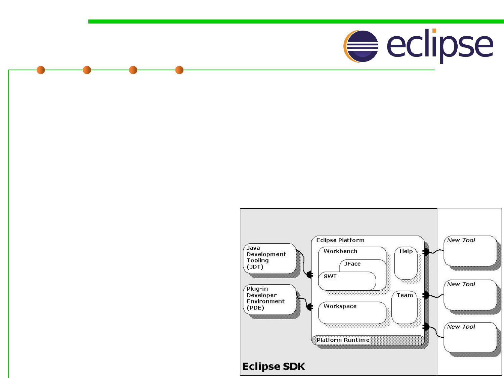

2.2 Process, Systems, and Tools of Software Construction
Eclipse as an IDE example
▪ Eclipse IDE: an open source IDE for Java, but not limited to,
C/C++, PHP, Python, etc, started as a proprietary IBM product
(Visual age for Smalltalk/Java)
– It contains a base workspace with tools for coding, building, running and
debugging applications, and an extensible plug-in system for
customizing the environment.
– Plug-ins(插件) are structured bundles of code and/or data that contribute
functionality to the system.
Functionality can be contributed
in the form of code libraries,
platform extensions, or even
documentation.
– Plug-ins can define extension
points, well-defined places
where other plug-ins can add
functionality.